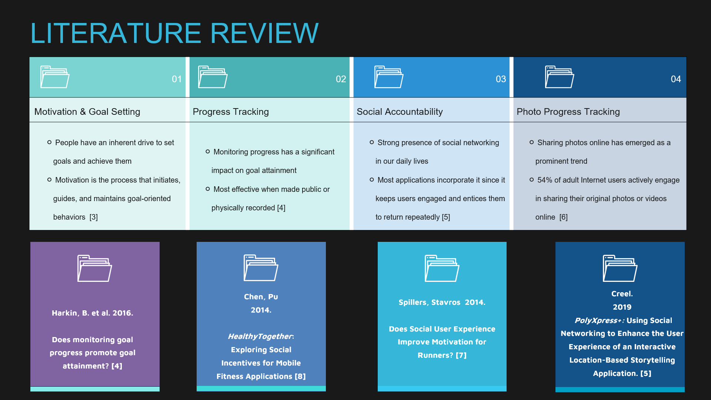
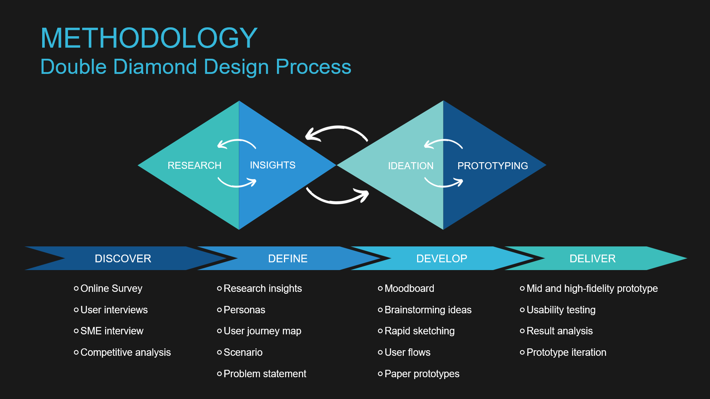
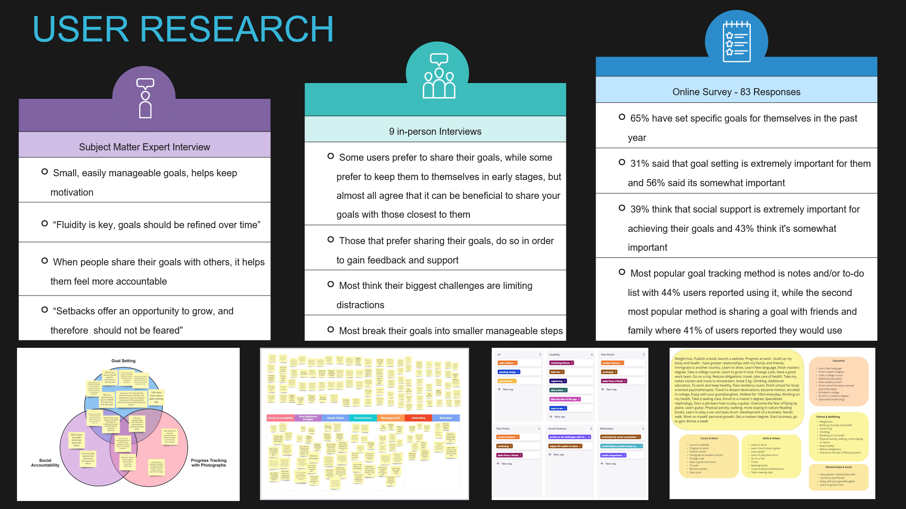
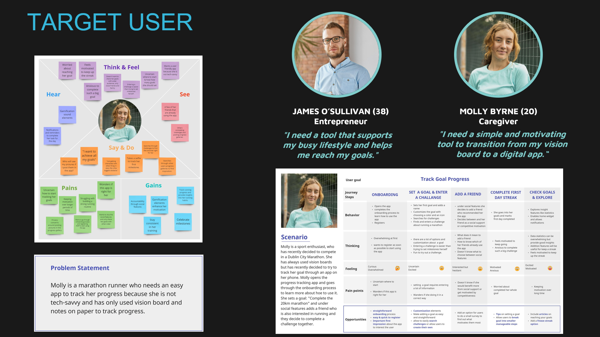
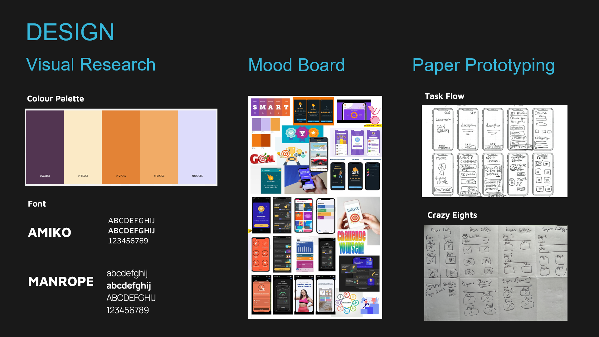
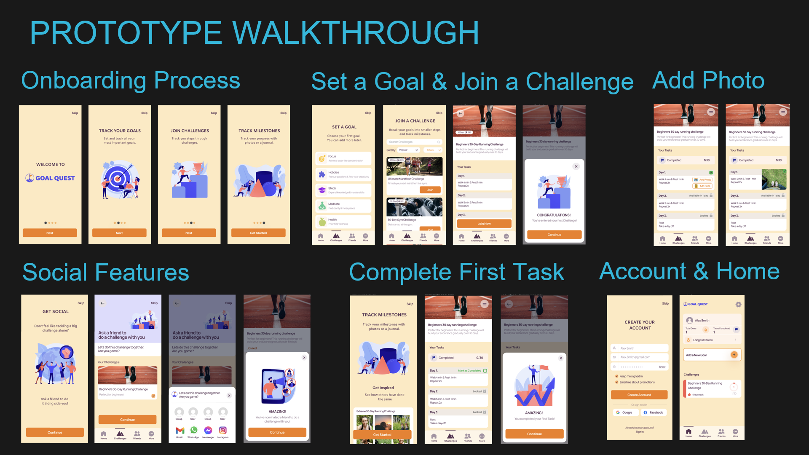
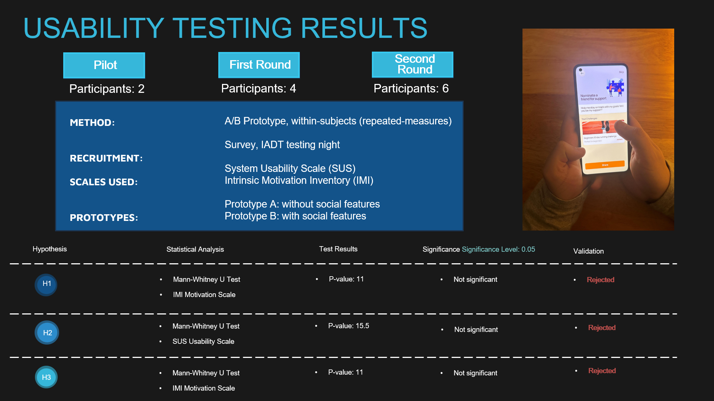
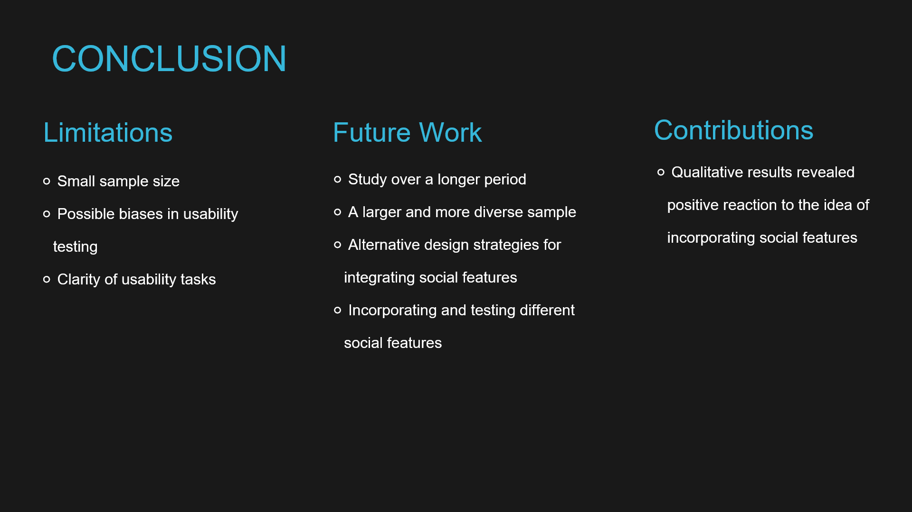

Goal Quest

Influence of Social Accountability within Progress Tracking Applications
This research study examined how incorporating social elements influences user engagement and behaviour within progress tracking applications. Goal setting and planning are part of our private and professional lives. Goals are the first step towards planning for the future and play a fundamental role in the development of skills in various aspects of life. In an era dominated by social connectivity and interactions, integrating social features within mobile applications has become a prominent trend. Adding social elements introduces a new dimension, allowing users to connect with their peers, share their accomplishments, and collaborate towards common goals. Understanding how social elements influence user behaviour and engagement within these applications is crucial for optimizing their design and maximizing their impact on user experience.
Literature Review
The literature review addresses research gaps on topics of interest to this study, focusing on research on motivation and effective goal setting, progress tracking, social aspect, and progress tracking with photographs. Although existing literature acknowledges the effectiveness of social features, there is a lack of direct research specifically investigating their impact on users' motivation and retention within progress tracking applications.

Project Methodology
The project used the Double Diamond design process to examine the problem and develop a digital product. With several progress tracking applications that already exist, the objective was to focus on creating a unique and innovative design. This process adopts an iterative approach where all ideas generated in response to the design challenge are tested and modelled, and only the most relevant ideas are retained, resulting in a more refined solution-finding process.

User Research Insights
User research was conducted in order to investigate user experiences and behaviours around progress tracking. The research consists of a mixed-methods approach, combining qualitative and quantitative techniques to gather insights into user perspectives and behaviours. The research methods include an online survey, user interviews and an SME interview.

Target User
Creating a concrete definition of a target user helped to guide the design process by ensuring that the users remain the central focus in decision-making. Collected data from the user interviews and a survey helped facilitate and guide the development of a target user. A primary and secondary persona was developed, followed by a journey map, scenario and finally, a problem statement.

Design Strategy
Collected user research findings were translated into actionable design strategies. A mood board was developed in order to establish the character of a design and to identify the elements needed to create it. Sketches and low-fidelity prototypes enabled experimentation with different layouts and design elements to determine optimal design solutions for digital products.

Digital Prototype
Two prototypes were developed. Prototype A is without any social features. Users set goals, join challenges, and track progress using photographs or personal notes. Prototype B encompasses social features, and it follows the same process as prototype A. Only now are users able to invite peers to do a challenge with them, and both parties have insight into each other’s progress.

Prototype Walkthrough
Usability Testing & Result Analysis
Data analysis was conducted on the collected research insights to validate or challenge the hypotheses, which were obtained from qualitative and quantitative sources based on results from usability testing. A/B Prototype testing within-subjects was conducted in order to gather statistical data. Results were measured using the SUS (System Usability Scale) and IMI (Intrinsic Motivation Inventory) scale. While qualitative analysis, based on post-interview questions, was analyzed through systematic content analysis.

Conclusion
All three hypotheses were disproved by the statistical analysis but validated by the qualitative data. It was found that the new features disrupted user satisfaction, making the user interface more complex. Resulting in users reporting that they prefer prototype A without social features, due to ease of use and straightforward user flow. These findings highlight the need for a more rigorous and systematic approach in the future, considering testing different social features and adopting various design strategies in order to better evaluate the context of using social features in progress tracking applications.
